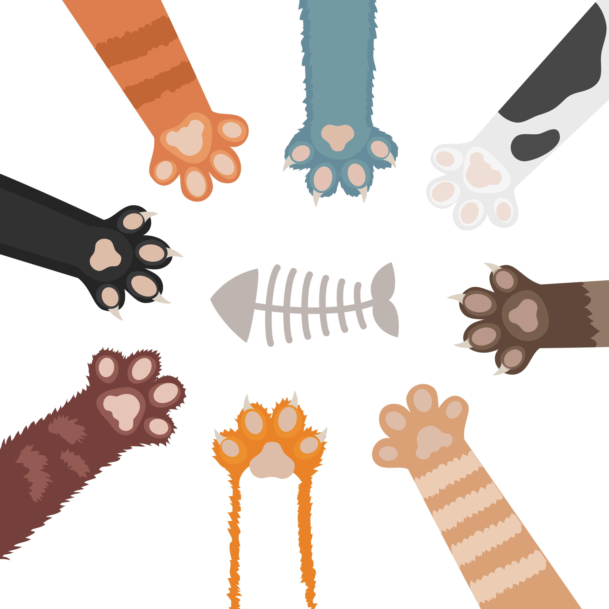

LA LEYENDA DE LAS GATITAS CÁLICO
La leyenda de las gatas calicó es una historia fascinante que combina la genética con el folclore.
Según la tradición popular, especialmente entre los pescadores japoneses, las gatas calicó son consideradas símbolos de buena suerte.
Pero la leyenda más notable se remonta al antiguo Tíbet:
En el siglo XII, un monasterio tibetano estaba lleno de discordia entre los monjes.
La llegada de una gata calicó y sus crías tricolores cambió todo. Los monjes, inspirados por la presencia de la gata, decidieron cuidar de ella y adoptarla como una especie de ofrenda.
Uno de los monjes, tras una profunda reflexión, interpretó que el patrón tricolor del pelaje de la gata tenía un significado divino: el blanco y el negro representaban el yin y el yang, el equilibrio entre opuestos, y el naranja simbolizaba la tierra, el hogar de todos los seres humanos.
La unión de estos tres colores representaba la tolerancia hacia las opiniones y diferencias de los demás, en lugar de discutir.
Además, existe otra leyenda que dice que las gatas calicó tienen poderes contra fantasmas y tormentas, y que los pescadores japoneses solían llevarlas en sus viajes para protegerse.
La creencia en estas historias ha llevado a que las gatas calicó sean consideradas emblemas de armonía y tolerancia en los hogares, encarnando el espíritu de unión y equilibrio.
Es interesante notar que la mayoría de las gatas calicó son hembras debido a la genética de sus colores de pelaje, que están determinados por los cromosomas sexuales que heredan de sus padres. El patrón de colores tan distintivo de las gatas calicó resulta del proceso de inactivación del cromosoma X.
En la CDMX hay varios emprendimientos que destacan por su amor a los gatitos, en esta página comparto 3 que son mis favoritos.

LA CASA DEL GATO GAZZU
La Casa del Gato Gazzu es una asociación civil sin fines de lucro con más de quince años de experiencia y servicio enfocado en la adopción de gatos.

CATFECITO
El Catfecito (de La Casa del Gato Gazzu) venden comida temática inspirada en gatitos, además de contar de la compañía de lindos gatitos mientras comes.
El dinero de tu consumo dona fondos para la rehabilitación, cuidado y adopción de gatos

MICHIVERSO
Michiverso es una tienda en cdmx que ofrece productos inspirados en gatitos, con diseños originales y mucha variedad de productos.